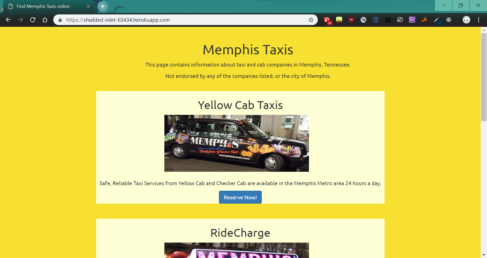
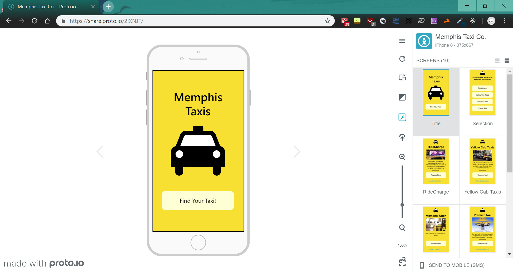

memphis taxis
summary
For my UI/UX course, we had an assignment in which we used both quantitative and qualitative user tests for evaluating
interface designs. By using a fictional taxi site, Memphis Taxis, we were able to collect and analyze user behavior through quantitative data in A/B
Testing and qualitative data in User Testing. To collect data, I hosted my A/B version site up on Heroku, through this link - refresh enough times, and you'll be able to see both versions!
a/b testing: the website

I coded up two simple, but different versions of the same taxi site, with the same information listed on it - the picture above is one of the two versions. I wanted to see if there would be any change between the two versions in terms of click rate, time to click, dwell time, or return rate. I made null and alternative hypotheses for each one, and then set out to collect my data.
I gave the link to the Memphis Taxis site (same as above) to friends and classmates, and asked them to browse through it normally, as if they were a customer looking for a taxi service. With their help, I was able to get enough data to start analyzing.
a/b testing: analyzing the data

Upon receiving user data of people browsing the site, I set out to do some legwork in calculating, statistically, if one version was better than the other. I performed statistical tests on all four metrics - chi-squared tests on click rate and return rate, and then t-tests on time to click and dwell time. I also calculated a confidence interval on the average time to click (shown above), to see if the difference in versions was statistically significant - they were not.
user testing: hifi mockup

For user testing, we were asked to redesign one version of our A/B site as a mobile app, and to host it online. I chose to use Proto.io, a site that allows users to create fully-interactive high-fidelity prototypes. The link to my mockup can be found here.
I made a qualitative hypothesis, based on this mobile app version of the website, that users would find it easy to reserve the taxi of their choice. I also made some tasks and subtasks for the user to attempt, so that I could judge if the app was clear enough in its design for a user to comfortably navigate.
user testing: usertesting.com
For the actual user testing, we used an outside site called UserTesting.com.
Regarding my hypothesis that “Users will find it easy to reserve the taxi of their choice.” : it did indeed seem easy for users to reserve the taxi of their choice, but it was what happened afterwards that made the users not confident that they had chosen correctly, or that they had the freedom to cancel that reservation when they deemed it fair.
My testing experience went well in that I got lots of valuable critical feedback on my app — some things that I had not even thought about, like the cancel reservation button. Knowing now how much critique and information I can receive with user testing, I would try to make my tasks more varied so that I can get more feedback on them.
reflection
This was the first time that I had coded a site from scratch, and I really enjoyed learning how to use wireframing and hifi mockups to help clarify my final vision for the Bagel Gourmet redesign. I also appreciated the chance to learn more CSS, especially flexboxes and the @media tag. It was especially nice to be able to create this website based on something that I was passionate about, and I had a lot of fun experimenting with different looks and layouts, to try and best preserve some of the best parts of the site. This was also a good opportunity to learn how to use Github Pages, so that I could access this site from anywhere I wanted to!